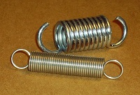
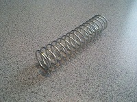

Spring Force
A spring force is any force that results from the elastic deformation of an object. The strength of a spring force is linearly dependent upon the amount of deformation. Thus the spring force is:
\[ \mathrm{ F_{spring} = -k \times x }\]Where k is a measure of the stiffness of the spring and x is the distance the spring is compressed (x is negative if you stretch the spring.)
In engineering statics, most bodies are assumed to be rigid, meaning that the bodies cannot deform. If bodies cannot deform, x in the equation above is always zero and thus the spring force exerted by the body is zero. In this course you can assume that bodies are rigid unless the body is labeled as a spring and the k value is given. In later courses we will examine how removing the assumption of rigidity affects systems.
Types of Springs:
Looking more closely at springs, we can see that springs can either deform in a linear fashion or in an angular fashion. Springs that deform in a linear way are called tension springs if they are primarily designed to be in tension, and compression springs if they are primarily designed to be in compression. The springs that are designed to be deformed in an angular fashion are called torsion springs.
|

These tension springs have loops or hooks on the end so they can be stretched out by other bodies during use.
|

This compression springs have flat ends so they can be compressed by other bodies during use.
|
This torsion spring shown here on a cloths pin is deformed by rotating the two halves of the clothes pin relative to one another.
|
Tension and Compression Springs:
Tension and compression springs will exert forces on the bodies in contact with the ends of the springs along the length of the spring. A spring will always attempt to return to its original undeformed state. This means that springs that are stretched will pull on the objects connected to the spring, trying to return to its original shorter length. Springs that are compressed will push on the objects connected to the spring, trying to return to its original longer length.
The magnitude of the spring force is equal to the stiffness of the spring (k) times the distance the spring is compressed by (x). If the spring is stretched, the value of x is negative. Positive magnitudes for the spring force indicate the spring is pushing on the objects it is connected to while negative magnitudes indicate the spring is pulling on the objects it is connected to.
Torsion Springs
Torsion springs are designed to be twisted along a particular axis. Torsion springs will exert moments on the bodies in contact with the ends of the spring that are twisting the torsion string. The torsion spring will also always attempt to return to its original undeformed state. This means that the torsion spring will exert a moment opposing forces compressing or extending the spring.
The magnitude of the spring moment is equal to the torsional stiffness of the spring \(\Kappa\) times the angle the spring is twisted by (\phi). The spring will always exert moments on the bodies it is connected to that oppose the twist exerted in the spring.
 |
| Author: Jacob Moore has liscenced this work under a Creative Commons Attribution-NonCommercial 3.0 Unported License. |